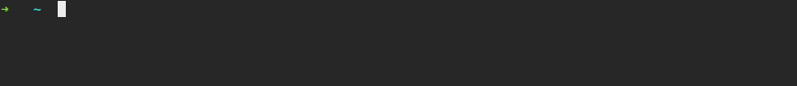

luciano@ratamero.com
#halp - virtualenv and virtualenvwrapper
since I am known for (over)customizing my work pc with scripts, aliases and whatnot, there's always someone asking me for tips on how I use virtualenv and virtualenvwrapper. so here we go: get ready for a hack or two that make my life as a python developer waaay easier! ;)
what is virtualenvwrapper?
for those who don't know, virtualenvwrapper is a bundle of virtualenv extensions. it provides a series of useful commands/scripts for dealing with virtualenvs, some of which I use daily.
before we start, here's how virtualenvwrapper works: it separates our project directories from the virtualenv specific folders, like bin, lib, include and others, while giving us many goodies. it creates the env folders for each environment inside the WORKON_HOME dir. it's great for people who don't want to put these folders inside the project directory; it means that, for example, you don't need to put them all into gitignore.
I, on the other hand, prefer not to separate the env from the project for two main reasons:
- my memory is so bad that I prefer not to have to remember where the env folders are;
- and, the best part, it makes it easier for my text editor to reach these library files.
with that, my text editor is able to suggest module/class/function names from my libs and "Go To Definition" works properly. "Go To Definition" is a feature from modern text editors (such as Sublime and Atom) that opens the source code for any imported module/class/function directly from your code (and that saves me so much work).

so, for explanation's sake, we'll suppose everything is bundled together inside your project folder. cool? cool.
workon, cdvirtualenv and some other useful commands
virtualenvwrapper has a bunch of useful commands for our day-to-day life as python developers, so these are some I use all the time:
workon
workon activates a given virtualenv from anywhere. when you run workon PROJECTNAME, you stay at the current folder, but with every aspect of the env active, like the python version, installed libs, environment variables and everything else. it serves as an entry point for some other hacks I'll tell you about and, yeah, yeah, it accepts tab completion.
cdvirtualenv
extremely useful if your env and project folders are the same. cdvirtualenv sends you directly to the root dir of your virtualenv (so you don't need to remember anything). for me, the bonus of going to both my project and env folders without having to cd to it is big enough. the combo of workon and cdvirtualenv is awesome!

cpvirtualenv
it copies everything virtualenv related from one env to another. rarely used, but, oh, it comes in handy.
cdsitepackages
takes you to the installed libs directory. simple, beautiful.
the magic of postactivate and postdeactivate scripts
so, yeah, here's the meat of the post: virtualenvwrapper executes hooks - simple bash scripts - for every step of activating/deactivating a virtualenv. you only need to create a postactivate and/or a postdeactivate file inside the bin folder of your env and they'll be executed when activating/deactivating the env.
this gives you two big features:
- you can export/overwrite environment variables on activation;
- you can execute automating scripts.
the first feature is self explanatory, but the second one is so beautiful. for example, you may run cdvirtualenv when activating your env, so you're taken to the project folder immediately. or even better: you may start project dependencies/fire up docker containers, or whatever you want. you can even make a cow tell you your evnironment directory.


another interesting point is that virtualenvwrapper creates global hooks on your WORKON_HOME folder. if you edit them, whenever you activate/deactivate an env, they'll be executed as well. pretty cool.
well, these are some of my tips on how I automate some dull processes using virtualenv and virtualenvwrapper. I hope it's been useful, and if you have any similar hacks for python environments, tell us in the comments! see you next time o/